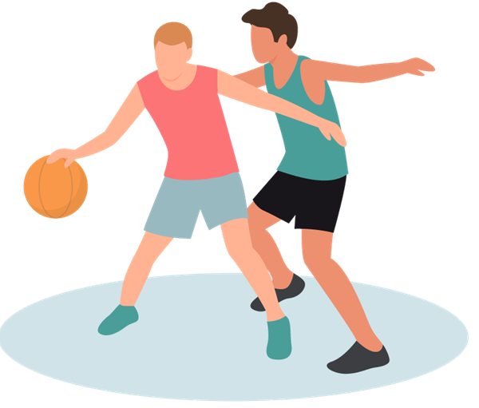
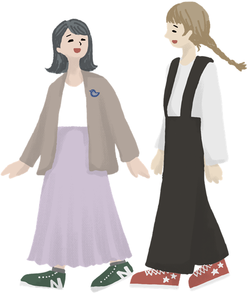

先輩インタビュー Vol.1
苦手だった英語が、
いちばんの「好き」に。
国際学部
国際コミュニケーション学科 3年
A.Kさん
少人数クラスで毎回発言するうちに、間違えることが怖くなくなりました。今は留学に向けて準備中です。
先輩インタビュー Vol.1
国際学部
国際コミュニケーション学科 3年
A.Kさん
少人数クラスで毎回発言するうちに、間違えることが怖くなくなりました。今は留学に向けて準備中です。
先輩インタビュー Vol.2
人間科学部
児童教育学科 4年
M.Sさん
附属園での実習を通して、教える楽しさを知りました。ゼミの先生には面接練習まで付き合ってもらっています。
先輩インタビュー Vol.3
生活科学部
食物栄養学科 2年
Y.Tさん
調理実習と実験が両方あるのが魅力。サークルでは学園祭のメニュー開発を担当しました。
心理学科 2年 R.Nさんの場合
{{ f.lead }}

